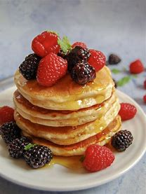

Ingredients
- Plain or white flour
- Milk
- Eggs
- Baking powder
- Vanilla flavouring
- Sugar
- Butter
- cameroon pepper
- Onions
- Water
- Oil
1.In a bowl,mix in all the ingredients with water
2.Then you heat up some oil in a pan.Next you fry you mix using a spoon to scoop out the mix batch after batch.
3.Voila! Your pancakes are reday serve hot with honey and fruits
Check out my other recipes!!!